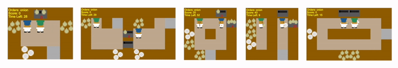

Overcooked¶
Overview¶
Overcooked-AI is a benchmark environment for fully cooperative human-AI task performance, based on the wildly popular video game Overcooked .
The goal of the game is to deliver soups as fast as possible. Each soup requires placing up to 3 ingredients in a pot, waiting for the soup to cook, and then having an agent pick up the soup and delivering it.
This environment can be used to test out the robustness of collaborative agents, the interaction between RL agents and humans, etc.
The environment is still under development, but right now half a dozen research papers are already using Overcooked-AI, you can find these papers in the original Overcooked-AI repo.
The original overcooked-ai repo contained 5 available layout, as shown below:
New layouts are easy to hardcode or generate programmatically.
Installation¶
Installation Methods¶
Install overcooked-ai. You can install by command pip or build from source.
# Method1: Install Directly
pip install overcooked-ai
# Method2: Build from source
git clone https://github.com/HumanCompatibleAI/overcooked_ai.git
pip install -e overcooked_ai/
Installation Check¶
After completing installation, you can check whether it is succesful by the following commands:
cd DI-engine
pytest -sv dizoo\overcooked\envs\test_overcooked_env.py
RL Environment Space¶
Observation Space¶
Right now we use cramped_room setting to describe the observation space of overcooked env. The layout of the cramped_room is of shape``(5, 4)``.
Contain 2 agents.
Each agent’s obs shape is
(layout_width, layout_height, 26), i.e.(5, 4, 26)for cramped_room.If use
concat_obsin environment, then the obs shape will be(2*layout_width, layout_height, 26), otherwise the obs shape will be(2, (layout_width, layout_height, 26)).If the
action_maskis enabled, the observation will also return an action_mask, which mask the unavailable action to zero (and one means action is available). The action_mask is of shape(2, 6).
Action Space¶
The action space is also containing 2 agents.
Buttons used in the game. In general 6 discrete action (N is different in different sub environments).
Meaning of the actions. - 0：North (Up)
1：South (Down)
2：East (Left)
3：West (Right)
4：Stay
5：Interact
Reward Space¶
Game score of overcooked.
Note that we used reward shapingin order to ease the training process. You can turn up/down shape reward by setting
use_shaped_rewardtoTrueorFalse.
Others¶
The game end after a fixed number of steps (default set to 400 steps).
Key Facts¶
The environment contains two agent.
Discrete action space.
The reward can be sparse if we set
use_shaped_rewardtoFalse.
Other¶
DI-zoo code example¶
Complete training configuration is at github link. You can run the demo as shown below:
from ding.config import compile_config
from ding.worker import BaseLearner, Episode1v1Collector, OnevOneEvaluator, NaiveReplayBuffer
from ding.envs import BaseEnvManager, DingEnvWrapper
from ding.policy import PPOPolicy
from dizoo.overcooked.models.overcooked_vac import BaselineVAC
from ding.utils import set_pkg_seed
from dizoo.overcooked.envs import OvercookGameEnv
from dizoo.overcooked.config import overcooked_demo_ppo_config
def wrapped_overcookgame():
return OvercookGameEnv({})
def main(cfg, seed=0, max_iterations=int(1e10)):
cfg.exp_name = 'selfplay_demo_ppo'
cfg = compile_config(
cfg,
BaseEnvManager,
PPOPolicy,
BaseLearner,
Episode1v1Collector,
OnevOneEvaluator,
NaiveReplayBuffer,
save_cfg=True
)
collector_env_num, evaluator_env_num = cfg.env.collector_env_num, cfg.env.evaluator_env_num
collector_env = BaseEnvManager(env_fn=[wrapped_overcookgame for _ in range(collector_env_num)], cfg=cfg.env.manager)
evaluator_env1 = BaseEnvManager(
env_fn=[wrapped_overcookgame for _ in range(evaluator_env_num)], cfg=cfg.env.manager
)
evaluator_env2 = BaseEnvManager(
env_fn=[wrapped_overcookgame for _ in range(evaluator_env_num)], cfg=cfg.env.manager
)
collector_env.seed(seed)
evaluator_env1.seed(seed, dynamic_seed=False)
evaluator_env2.seed(seed, dynamic_seed=False)
set_pkg_seed(seed, use_cuda=cfg.policy.cuda)
model1 = BaselineVAC(**cfg.policy.model)
policy1 = PPOPolicy(cfg.policy, model=model1)
model2 = BaselineVAC(**cfg.policy.model)
policy2 = PPOPolicy(cfg.policy, model=model2)
tb_logger = SummaryWriter(os.path.join('./{}/log/'.format(cfg.exp_name), 'serial'))
learner1 = BaseLearner(
cfg.policy.learn.learner, policy1.learn_mode, tb_logger, exp_name=cfg.exp_name, instance_name='learner1'
)
learner2 = BaseLearner(
cfg.policy.learn.learner, policy2.learn_mode, tb_logger, exp_name=cfg.exp_name, instance_name='learner2'
)
collector = Episode1v1Collector(
cfg.policy.collect.collector,
collector_env, [policy1.collect_mode, policy2.collect_mode],
tb_logger,
exp_name=cfg.exp_name
)
# collect_mode ppo use multimonial sample for selecting action
evaluator1_cfg = copy.deepcopy(cfg.policy.eval.evaluator)
evaluator1_cfg.stop_value = cfg.env.stop_value
evaluator1 = OnevOneEvaluator(
evaluator1_cfg,
evaluator_env1, [policy1.collect_mode, policy2.collect_mode],
tb_logger,
exp_name=cfg.exp_name,
instance_name='selfplay_evaluator1'
)
evaluator2_cfg = copy.deepcopy(cfg.policy.eval.evaluator)
evaluator2_cfg.stop_value = cfg.env.stop_value
evaluator2 = OnevOneEvaluator(
evaluator2_cfg,
evaluator_env2, [policy2.collect_mode, policy1.collect_mode],
tb_logger,
exp_name=cfg.exp_name,
instance_name='selfplay_evaluator2'
)
for _ in range(max_iterations):
if evaluator1.should_eval(learner1.train_iter):
stop_flag1, reward = evaluator1.eval(learner1.save_checkpoint, learner1.train_iter, collector.envstep)
tb_logger.add_scalar('selfplay1_evaluator_step/reward_mean', reward, collector.envstep)
if evaluator2.should_eval(learner1.train_iter):
stop_flag2, reward = evaluator2.eval(learner1.save_checkpoint, learner1.train_iter, collector.envstep)
tb_logger.add_scalar('selfplay2_evaluator_step/reward_mean', reward, collector.envstep)
if stop_flag1 and stop_flag2:
break
train_data, _ = collector.collect(train_iter=learner1.train_iter)
for i in range(cfg.policy.learn.update_per_collect):
learner1.train(train_data[0], collector.envstep)
learner2.train(train_data[1], collector.envstep)
if __name__ == "__main__":
main(overcooked_demo_ppo_config)
Algorithm Benchmark¶
TODO